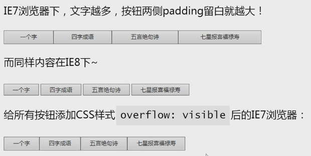
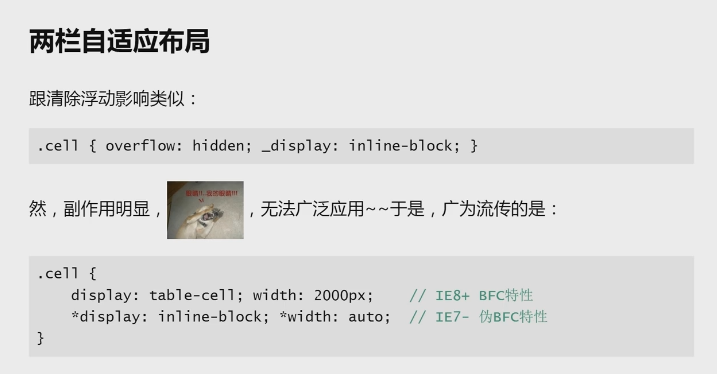
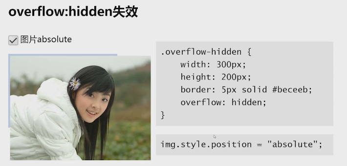

box overflow值：
visible(默认)
hidden(隐藏!=剪裁)
scroll
auto
visible(默认)
hidden(隐藏!=剪裁)
scroll
auto
返回顶部1.overflow基本属性 值：visible（默认） hidden scroll auto inherit（同其他css属性的inherit值一样，ie8+支持）
如果overflow-x、overflow-y值相同，则等同于overflow
如果overflow-x、overflow-y值不同，且其中一个为visible,另一个为hidden/auto/scroll，那么visible会被重置为auto

解决上图方法：直接删除width:100%
3.overflow作用范围
1.非dispaly:inline
2.有对应方位的尺寸限制。width/height/max-width/max-height/absolute拉伸
ie7 bug：max-width和max-height与overflow:hidden同时存在，且只有一方向超出内容，仍会有两个滚动条
3.对于单元格td等，还需要设置table{table-layout:fixed}才行 (table-layout:fixed列宽由表格宽度和列宽度设定/automatic)
4.overflow妙用

5.overflow与滚动条
滚动条出现条件：1.overflow:auto/overflow:scroll (有些元素，比如html、textarea自动带overflow属性)
2.内容超出
无论什么浏览器，默认滚动条均来自<html>,而不是<body>标签
tips. body默认margin=0.5rem; 0.5*16=8px
ie7默认垂直方向有滚动条,效果相当于但不是overflow-y:scroll，ie8+默认垂直方向overflow-y:auto（overflow-y兼容ie8+） ---- 去除方法，html{overflow:hidden}
JS与滚动条：var st = ducument.body.scrollTop(chrome) || document.documentElement.scrollTop(其他); ---- 应用于返回顶部按钮的出现时机和点击事件,本页添加了该案例
overflow的padding-bottom缺失现象
 6.滚动条的宽度机制
滚动条会占用容器的可用宽度或高度
ie7+/chrome/firefox的滚动栏默认宽度为17px
overflow:auto 会造成潜在的布局隐患 什么隐患自己想想 解决方法：自适应布局或预留滚动条位置
除此之外，margin：0 auto也会有水平居中跳动问题 修复（ie9+支持）：.contain{width:1200px;padding-left:calc(100vw - 100%)}
(100vw：浏览器宽度 / 100%：可用内容宽度)
7.自定义滚动条-webkit- / 其他浏览器有插件
6.滚动条的宽度机制
滚动条会占用容器的可用宽度或高度
ie7+/chrome/firefox的滚动栏默认宽度为17px
overflow:auto 会造成潜在的布局隐患 什么隐患自己想想 解决方法：自适应布局或预留滚动条位置
除此之外，margin：0 auto也会有水平居中跳动问题 修复（ie9+支持）：.contain{width:1200px;padding-left:calc(100vw - 100%)}
(100vw：浏览器宽度 / 100%：可用内容宽度)
7.自定义滚动条-webkit- / 其他浏览器有插件
 8.overflow与BFC
BFC：block formatting context 块级格式化上下文
页面之结界，内部元素无论怎样都不会影响到外部
overflow:hidden/auto/scroll会触发BFC
应用：1.清除浮动 不能用overflow:hidden的时候：.clearfix{*zoom:1} .clearfix:after{content:'';display:table;clear:both}
2.避免margin穿透问题
3.两栏自适应布局 见下例 缩放到较小时观看overflow存在或取消的效果
8.overflow与BFC
BFC：block formatting context 块级格式化上下文
页面之结界，内部元素无论怎样都不会影响到外部
overflow:hidden/auto/scroll会触发BFC
应用：1.清除浮动 不能用overflow:hidden的时候：.clearfix{*zoom:1} .clearfix:after{content:'';display:table;clear:both}
2.避免margin穿透问题
3.两栏自适应布局 见下例 缩放到较小时观看overflow存在或取消的效果

9.overflow:hidden/auto在absolute时失效  10.overflow